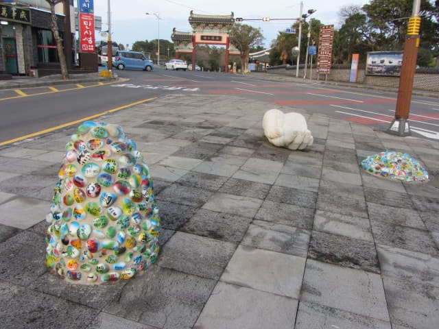

遊覽完正房瀑布, 今天的西歸浦行程也宣佈全部順利完成。看看時間, 剛剛過了下午六時, 這時天色漸漸轉晴, 看見離天黑還有一小時, 便決定沿偶來6號小路步行返回西歸浦每日偶來市場吃晚飯。西歸浦每日偶來市場離這裡不太遠, 只要沿著偶來6號小路便是, 應該不會走錯路的, 而且對附近的環境已有印象, 估計步行約四十分鐘便可抵達。
偶來6號小路
離開正房瀑布, 從東面石做牌樓進入徐福公園, 再一次沿公園中的偶來6號小路走。
穿過徐福公園及西面牌樓出口, 走過馬路。馬路中心有一個藝術廣場, 擺放了幾件藝術品, 也順道遊覽。

繼續沿偶來6號小路走, 沿途都有清楚的標誌, 不會迷途的。
偶來6號小路沿途的房子及壁畫很有趣, 不時停下來拍照。
街道左邊不遠處是西歸浦港。還看到海中的文島 (문섬)。
一直向前走。街道充滿藝術氣息, 令人身心舒暢。
走了約二十分鐘, 路口有一個偶來箭頭標誌, 表示要轉換方向 – 轉右走。看看右邊, 馬路對面有一條向上的小徑, 估計是循那方向走。
李仲燮公園
轉右走過馬路, 沿小徑往上走一會, 左邊是一個公園, 公園內有幾個帳棚, 環境十分熟識, 想一想, 哈哈哈~~~~, 就是中午在這裡吃免費滋味午餐的李仲燮公園!
中午曾使用公園旁居民會社的洗手間, 原來平時不開放的, 只是公園有特別活動才方便大眾而已。洗手間去不成, 唯有繼續忍。
接著轉左沿公園中的步道走。上午人頭湧湧、人聲嘈雜的公園, 現在回復寧靜。
再一次經過李仲燮故居。
穿過李仲燮公園, 又來到李仲燮藝術街, 所有攤檔現在都空空如也, 一片冷清。
沿李仲燮路一直往上走。
西歸浦每日偶來市場 (서귀포매일올레시장 Seogwipo Maeil Olle Market)
來到李仲燮路山坡上的出入口, 西歸浦每日市場就在馬路對面。